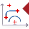

17.1. Overview
Help information for CAM programming can be found in the CAM help.
Overview of CAM commands that can be accessed directly from the pull-down menu:
 | Starts the hyperMILL® browser. → | |
Prepare a model for collision checking. → | ||
 | Start the hyperMILL® Project assistant. → | |
 | Select a machining cycle to define a hyperMILL® job. → | |
 | Undo step within CAM programming. → | |
Delete toolpaths. → | ||
 | Import toolpath from → | |
 | Analyze toolpaths. → | |
| Analyze distances between surfaces and a toolpath. → | |
 | Optimize parameters of barrel cutters based on surface and curve information. → | |
 | Trim toolpath interactively. → | |
Control the display of toolpaths. → → | ||
Open the CAM analysis tool. → → | ||
 | Display faces that indicate an error during preparation for the toolpath calculation. The faces contain a tag. The visibility filter is modified. → → | |
 | Remove remains of temporary feedback graphics. → → | |
 | Import → → | |
 | Export → → | |
 | Import tools from the WinTool tool database. → → | |
 | Export tools to the WinTool tool database. → → | |
 | Import tools from the Zoller tool database. → → | |
Export tools to the Zoller tool database. → → | ||
 | Import tools from the TDM Systems tool database. → → | |
 | Export tools to the TDM Systems tool database. → → → | |
 | Import tools from the NCSIMUL | Tool tool database. → → | |
Create a contour offset. → → | ||
Create a contour to limit the machining. → → | ||
 | Wrap or unwrap a profile pattern. → → | |
 | Wrap or unwrap a label for a side shell. → → | |
 | Open the AUTOMATION Center to create a script for an automated sequence. → → | |
 | Run a AUTOMATION Center script. → → | |
| Export tool reports. → → | |
| Select and configure template for tool report. → → | |
 | Select and configure template for job report. → → | |
 | Export job report. → → | |
| Start the VIRTUAL Tool Editor software. → → | |
| Start the Tool database software. → → | |
Start the hyperVIEW software. → → | ||
 | Open the default settings for CAM programming. → → | |
Open the Docking manager. → → | ||
Adjust the file paths to the current default settings. → → | ||
 | Open the CAM help. → | |
Start e-learning. → |